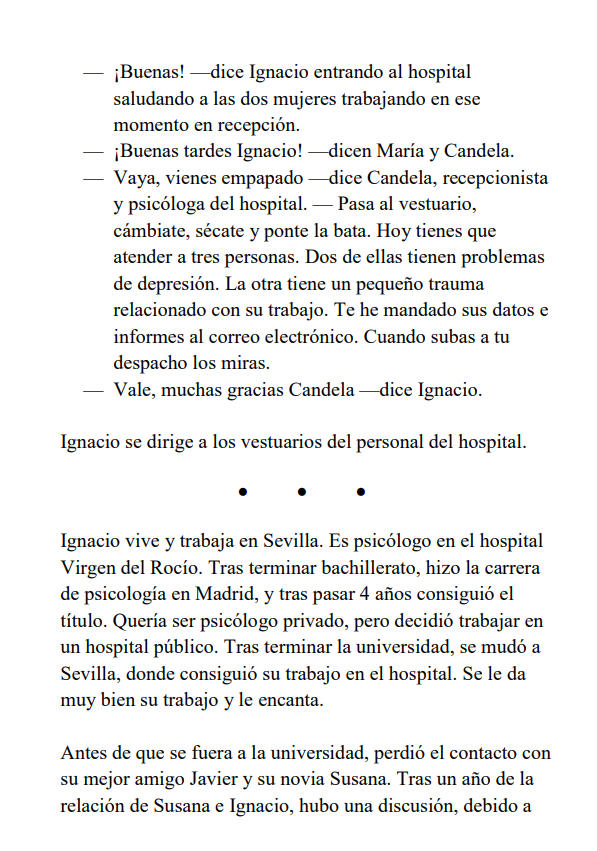
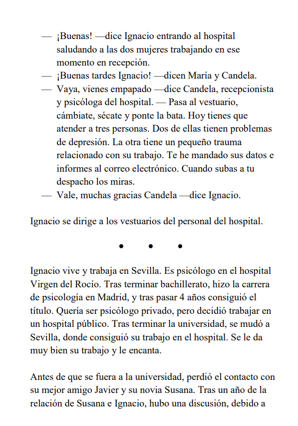

Realidad Soñada 2
Tras haber escrito Realidad Soñada, decidí empezar una "segunda parte", por eso en el final de Realidad Soñada pone "¿Fin?". Esta "segunda parte" no tendrá nada que ver con Realidad Soñada, ni se llamará igual, pero es necesario leerse antes Realidad Soñada para entender este libro y los personajes y la historia. Será una novela negra principalmente, larga quizás con alguna imagen y más descripciones de las cosas, personas. Al igual que por primera vez se podrá ver el aspecto de Susana, Javier e Ignacio. El libro saldrá dentro de mucho, solo he terminado el primer capitulo. Os pongo capturas de las páginas 1 y 2 del capítulo 1, que parecerán aburridas, pero poco a poco la historia mejorará.
 

Por cierto, vamos a sacar un corto de Realidad Soñada. El trailer está aquí mismo :D. Espero que os guste, más información en la descripción del trailer.